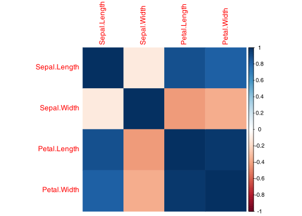
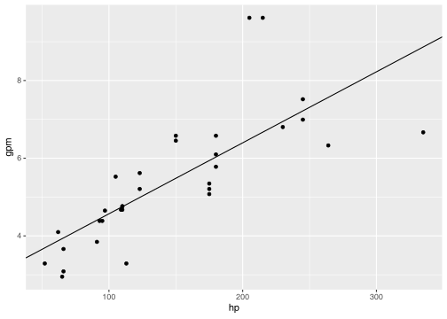

Correlation is a measure of how two variables change together. There are many different variants, the most popular being the Pearson correlation and the Spearman correlation. Both can be calculated using the cor() function in base R and tested for significance using the cor.test(). Here they are in action on the iris dataset:
Warning in cor.test.default(iris$Sepal.Length, iris$Petal.Length, method = "spearman"): Cannot compute exact p-value with ties
Spearman's rank correlation rho
data: iris$Sepal.Length and iris$Petal.Length
S = 66429, p-value < 2.2e-16
alternative hypothesis: true rho is not equal to 0
sample estimates:
rho
0.8818981
The warning message above indicates that there are duplicated values in the data, which makes the Spearman correlation test less reliable.
The cor() function can also calculate the correlation matrix – that means, correlate each variable with each. This is useful for visualizing the relationships between variables. Here is how you can do it:
The diagonal of the matrix is always 1, because a variable is always perfectly correlated with itself. The matrix is symmetric, because the correlation between \(x\) and \(y\) is the same as the correlation between \(y\) and \(x\). We can visualize this matrix using pheatmap:
The scale="none" parameter is used to avoid scaling the data by rows or by columns – it does not make sense for a symmetrical matrix.
As you can see, the one oddball in the iris dataset is the Sepal.Width variable, which is not very correlated with the other three.
There is another package to visualize correlation matrices, called corrplot. It is more flexible and can be used to visualize the correlation matrix in many different ways. Here is an example:
library(corrplot)
corrplot 0.94 loaded
corrplot(M, method="color")

There are many cool ways how corrplot can visualize the correlation matrix. You can check them out in the documentation of the package.
When you run multiple tests, you increase the chance of finding a false positive. If two data sets do not differ, and you run a test a 100 times, on average 5 of those tests will show a significant difference at the 0.05 level. This is called the multiple testing problem.
Therefore, in order to trust the results of your tests, you need to correct for multiple testing. There are basically two main approaches to this:
Family wise error rate (FWER) correction, which controls the chance of making at least one false positive. Basically, we want the corrected p-values to mean just what the regular once do – the probability of making a false positive. The most popular method for this is the Bonferroni correction, which divides the significance threshold by the number of tests.
False discovery rate (FDR) correction, which controls the proportion of false positives among all significant results. The most popular method for this is the Benjamini-Hochberg (BH) correction.
The former is very conservative, which means that while indeed you make sure that the corrected p-values are what you think they are, you are also introducing a huge number of type II errors - false negatives.
The BH correction is more relaxed, and is often used in high-throughput experiments in biology. Since it is not really a p-value it is good to refer to it as a q-value or FDR value. An FDR of, say, 0.05 means that among the results which have an FDR of 0.05 or less, at most 5% are expected to be false positives.
Both of these corrections can be done with the p.adjust() function in R. Say, we make a number of comparisons using the iris dataset:
OK, so a lot has happened above that you have not seen before. First, why do we convert Species to a factor? The reason is that the Species is already a factor in the original data frame, but it has three levels: “setosa”, “versicolor”, and “virginica”. When we filter out the “setosa” species, the levels remain unchanged, and the t.test function will complain that we have too many groups. Therefore, we need to convert the Species to a factor with only two levels.
The sapply function is a way to apply a function to each value of a vector or list. Here, we apply an anonymous function, that is, defined without giving it a name, to every value in the vector 1:4. The anonymous function takes as parameter a single value from the vector, and returns the p-value of the t-test between the corresponding column of the sv data frame and the Species variable.
Another new thing that you have not seen previously is the ~ sign. Rather than running a t-test on two vectors, we run it on a formula. We will cover formulas in a moment, but basically here it means for the t-test that the Species vector defines the groups, while column sv[,i] defines the variable to be tested.
We run 4 comparisons, and assuming that there were no differences between the species, we would expect 5% of the tests to be significant at the 0.05 level – which means that the probability of having at least one false positive in 4 tests is \(1 - (1 - 0.05)^4 = 0.185\). Let’s see if we can do something about it:
As you can see, the corrected p-values are higher than the original ones, and the BH correction is less conservative (i.e., the p-values are smaller) than the Bonferroni correction.
Simple linear models
We end with an example of linear regression, and the most important reason for that is the introduction of formulas in R.
A formula is a weird little construct. It contains variables, and links them using the ~ (tilde) sign. On the left side of the ~ are the dependent variables (the “y”), on the right side are the independent variables (the “x”, or covariates).
Depending on the particular function, the formula can mean different things and will have different syntax. For example, in a package like the DESeq2 from Bioconductor, there will be nothing on the left side – because DESeq2 understands that the formula applies to every single gene in the input matrix.
Here we will use the lm() function, which is the basic linear regression included in base R. Somewhat similar to tidyverse, you can use column names of a data frame in the formula, and specify the data frame with the data parameter. We will use it to model regression of the mathematical form
lm()
\[ y = a + b \cdot x + \epsilon \]
where \(a\) is the intercept, \(b\) is the slope, and \(\epsilon\) is the error.
As an example, we will use the mtcars dataset, which contains information about, you guessed it, cars (it is quite old – it comes from 1974). In the data frame, there are two columns that we will use: mpg (miles per gallon, so fuel usage given in the american way), and hp (horsepower). We will try to predict the miles per gallon based on the horsepower. However, rather than model mpg, we will use its inverse – gallons per mile, gpm, multiplied by 100 (so, effectively, gallons per 100 miles).
The lm() function returns a model object, which contains a lot of information of no immediate use for us. To actually know the coefficients and p-values, it’s best to use either the summary() function, or the tidy() function from the broom package.
summary(model)
Call:
lm(formula = gpm ~ hp, data = mtcars)
Residuals:
Min 1Q Median 3Q Max
-2.19776 -0.56724 -0.07017 0.24239 3.12691
Coefficients:
Estimate Std. Error t value Pr(>|t|)
(Intercept) 2.741786 0.456521 6.006 1.37e-06 ***
hp 0.018277 0.002827 6.464 3.84e-07 ***
---
Signif. codes: 0 '***' 0.001 '**' 0.01 '*' 0.05 '.' 0.1 ' ' 1
Residual standard error: 1.079 on 30 degrees of freedom
Multiple R-squared: 0.5821, Adjusted R-squared: 0.5682
F-statistic: 41.79 on 1 and 30 DF, p-value: 3.839e-07
We have two rows in the “Coefficients” table, because we had two coefficients in our model: \(a\), the intercept, and \(b\), the slope. The \(b\) coefficient answers the question: how much more miles per gallon do we get if we reduce horse power by 1?
We can plot how the model fits our data with ggplot2:
library(ggplot2)a <-coefficients(model)[1]b <-coefficients(model)[2]ggplot(mtcars, aes(x = hp, y = gpm)) +geom_point() +geom_abline(intercept = a, slope = b)

coefficients()
The coefficients() function extracts the vector with the coefficients from the model.
But wait. The intercept, \(a\), is the fuel usage when the car’s horsepower is 0. Logically, the fuel usage of a car with 0 horsepower should be precisely 0, and not almost 3. Any value other than 0 simply doesn’t make sense. We can tell lm() that the intercept should be 0 quite easily:
Call:
lm(formula = gpm ~ 0 + hp, data = mtcars)
Residuals:
Min 1Q Median 3Q Max
-4.6238 -0.5268 0.9824 1.4068 2.7063
Coefficients:
Estimate Std. Error t value Pr(>|t|)
hp 0.033703 0.001725 19.54 <2e-16 ***
---
Signif. codes: 0 '***' 0.001 '**' 0.01 '*' 0.05 '.' 0.1 ' ' 1
Residual standard error: 1.576 on 31 degrees of freedom
Multiple R-squared: 0.9249, Adjusted R-squared: 0.9225
F-statistic: 381.7 on 1 and 31 DF, p-value: < 2.2e-16
As you can see, we have now only one coefficient – because we forced the other one to be 0 with the 0 + syntax.
The nice thing about this type of approach is that it can be easily extended to model much more complex situations. For example, what else does the fuel usage depend on? One of the columns in the mtcars dataset is the weight of the car. We can add it to the model like this:
model_2 <-lm(gpm ~0+ hp + wt, data=mtcars)summary(model_2)
Call:
lm(formula = gpm ~ 0 + hp + wt, data = mtcars)
Residuals:
Min 1Q Median 3Q Max
-2.0183 -0.4441 0.1447 0.5905 1.1068
Coefficients:
Estimate Std. Error t value Pr(>|t|)
hp 0.007443 0.002364 3.148 0.0037 **
wt 1.330059 0.113669 11.701 1.05e-12 ***
---
Signif. codes: 0 '***' 0.001 '**' 0.01 '*' 0.05 '.' 0.1 ' ' 1
Residual standard error: 0.6791 on 30 degrees of freedom
Multiple R-squared: 0.9865, Adjusted R-squared: 0.9856
F-statistic: 1096 on 2 and 30 DF, p-value: < 2.2e-16
Again we are using the 0 + syntax to force the intercept to be 0 – which makes sense, since a car with no horsepower and no weight should use no fuel. The summary() function shows us that the weight of the car is also significant in predicting the fuel usage, although the \(p\)-value for the hp coefficient is now much higher. Well, there is a correlation between horsepower and weight.
But which model is better? If you look at the summaries above, you will find that the R-squared value is given. This is a measure of how well the model fits the data. The closer it is to 1, the better the model. For model_0, the R-squared is 0.92, and for model_2 it is 0.99.
However, adding more variables to the model will always increase the fit, leading to the situation we call overfitting, because while increasing the fit to this particular dataset we will be decreasing the models predictive power.
Call:
lm(formula = gpm ~ 0 + hp + wt + qsec + drat + disp + cyl, data = mtcars)
Residuals:
Min 1Q Median 3Q Max
-1.6976 -0.4062 0.1508 0.3457 1.3327
Coefficients:
Estimate Std. Error t value Pr(>|t|)
hp 0.004814 0.004045 1.190 0.24479
wt 1.031644 0.329317 3.133 0.00425 **
qsec -0.011301 0.072827 -0.155 0.87788
drat 0.201028 0.272197 0.739 0.46680
disp 0.002103 0.003253 0.646 0.52370
cyl 0.062671 0.164361 0.381 0.70608
---
Signif. codes: 0 '***' 0.001 '**' 0.01 '*' 0.05 '.' 0.1 ' ' 1
Residual standard error: 0.6913 on 26 degrees of freedom
Multiple R-squared: 0.9879, Adjusted R-squared: 0.9851
F-statistic: 353 on 6 and 26 DF, p-value: < 2.2e-16
One way we can avoid overfitting is by using another measure of model fit, AIC (Akaike Information Criterion). The AIC() function calculates the AIC for a model, which is a measure of how well the model fits the data, but penalizes the number of parameters. The lower the AIC, the better the model.
AIC(model_0)
[1] 122.8965
AIC(model_2)
[1] 69.97504
AIC(model_huge)
[1] 74.53647
In the above examples we have been using continuous variables, but we can use almost anything with linear models. For example, we can ask how the Sepal.Length of the iris dataset depends on the Species:
Call:
lm(formula = Sepal.Length ~ Species, data = iris)
Residuals:
Min 1Q Median 3Q Max
-1.6880 -0.3285 -0.0060 0.3120 1.3120
Coefficients:
Estimate Std. Error t value Pr(>|t|)
(Intercept) 5.0060 0.0728 68.762 < 2e-16 ***
Speciesversicolor 0.9300 0.1030 9.033 8.77e-16 ***
Speciesvirginica 1.5820 0.1030 15.366 < 2e-16 ***
---
Signif. codes: 0 '***' 0.001 '**' 0.01 '*' 0.05 '.' 0.1 ' ' 1
Residual standard error: 0.5148 on 147 degrees of freedom
Multiple R-squared: 0.6187, Adjusted R-squared: 0.6135
F-statistic: 119.3 on 2 and 147 DF, p-value: < 2.2e-16
In fact, the above model is equivalent to an ANOVA test. The individual \(p\)-values above are actually not of immediate interest, since in ANOVA we want to first test if there is any difference between the groups, and only then test which groups differ. This can be done with the anova() function:
anova(model_iris)
Analysis of Variance Table
Response: Sepal.Length
Df Sum Sq Mean Sq F value Pr(>F)
Species 2 63.212 31.606 119.26 < 2.2e-16 ***
Residuals 147 38.956 0.265
---
Signif. codes: 0 '***' 0.001 '**' 0.01 '*' 0.05 '.' 0.1 ' ' 1
There is much more to ANOVA, the lm() function, and to linear models in general. If you are interested, I would recommend reading the R Book by Michael J. Crawley, which is a great resource for learning statistics in R.